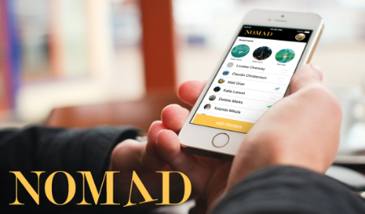
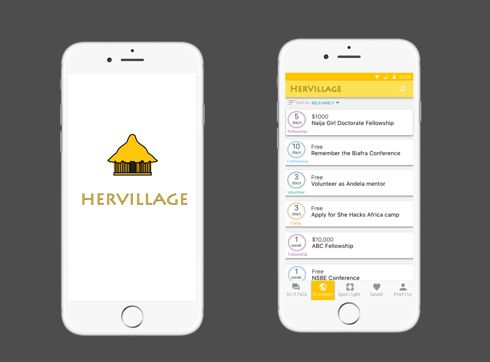
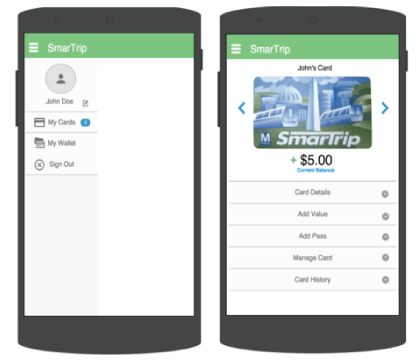
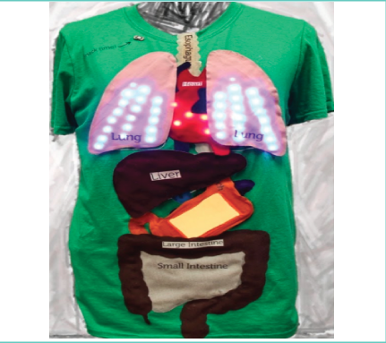
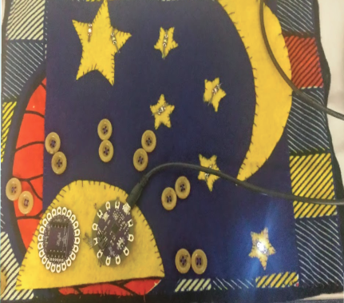

Projects

Nomad
Team project | User research | Lo-Fi prototypes | Interactive prototypes | Mixed methodsNomad is a smartphone application that aims to combat the stress of traveling in groups. This app allows travelers to collaborate on all aspects of a trip, from drafting an itinerary to documenting and sharing their adventures that happen along the way. The app recommends destinations, supports collaborative itinerary creation, and organizes moments captured during the trip.
[Launch Video] [Launch Prototype] [Launch Report]

HerVillage
Co-design | Emerging Markets | Girls | Computer Science | Educational TechnologiesMy Master’s Capstone project focused on what role technology can play in addressing the barriers to education for female programmers in Nigeria. HerVillage is a social platform that provides access to resources for personal and professional development to empower girls in Nigeria to live up to their full potential. This android application will be available in the Google Play Store soon.
[Learn More]

Emotionally Happy Registration Experience
Web Development | Web Design | CreativityImagine a user wants to post a message board. However, the message board forces the user to create an account with a username, email address, password, and CAPTCHA. That's annoying. I was given task to design a webpage that represents a message board that enables the user to enter all the required information mentioned in the description above. The experience must be: (1) emotionally pleasant, (2) creative, and (3) fun for the user. Did I succeed? Launch page below to find out:
[Launch Page]

Smart Trip Proposal
Team Project| Design Thinking | Rapid Prototyping | Market AnalysisCurrently, there aren’t any widely used mobile applications that enables WMATA metro and bus riders to efficiently and conveniently purchase fares on their SmarTrip cards or manage their SmarTrip accounts from their mobile device. For example, in order to purchase fares on a SmarTrip card, commuters have to physically go to a metro station, retailer, or on the website). This application will expedite such a process and improve the user experience of commuters using the metro.

BodyVis
Children | Educational Technology | Wearables | Health | Mixed MethodsI joined the BodyVis team as a research assistant in January 2015. The Bodyvis project focuses on the affordances and challenges of designing and implementing wearable technologies with real-time physiological sensing and visualization to engage elementary-age children in understanding abstract information in STEM learning environments.
[Learn More]

GMail Notification System for Older Adults
Older Adults | Prototyping | Inclusive Design | E-textiles | Social ComputingMany of the older adults living in the assistant living community my group studied mentioned that they must leave the comfort of their private rooms just to use the computers in the lab to check email or communicate with family and friends. This can be quite a challenge for some of the older adults who may live farther away from the computer room or who have some form of mobile disability. I present the idea of crafting ambient displays to encourage social communication for older adults
[Launch demo]